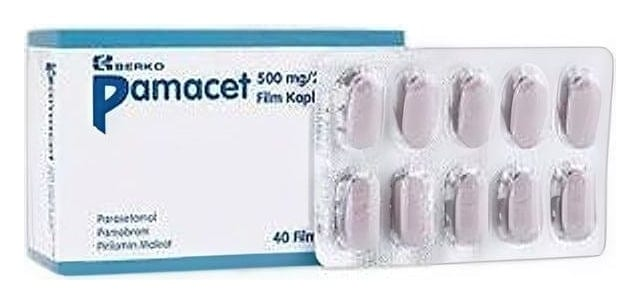

Pamacet 500 mg/25 mg/15 mg Film Kaplı Tablet, 24 Adet

Ne için kullanılır
KT · Bölüm 1PAMACET film kaplı tablet etkin madde olarak parasetamol, pamabrom ve pirilamin maleat içerir. Parasetamol ağrı kesici olarak çeşitli ağrıların tedavisinde ve ateşli hastalıklarda ağrı kesici ve ateş düşürücü olarak, pamabrom diüretik (idrar söktürücü) ve pirilamin maleat ise antihistaminik (alerjiye karşı) olarak kullanılır.
PAMACET, adet döneminde (menstürel periyotta) görülen aşağıdaki belirtilerin tedavisinde kullanılır: Kramp Baş ağrısı Şişkinlik Sırt ağrısı, bel ağrısı Ödem (vücutta su tutulması) Kas ağrıları İritabilite (sinirlilik veya uyarıya aşırı tepki gösterme)
PAMACET, leylak renkli film kaplı, oblong, 24 ve 40 film kaplı tablet içeren, şeffaf PVC/PVDC/Al blister ile kapatılmış, karton kutuda kullanıma sunulur.